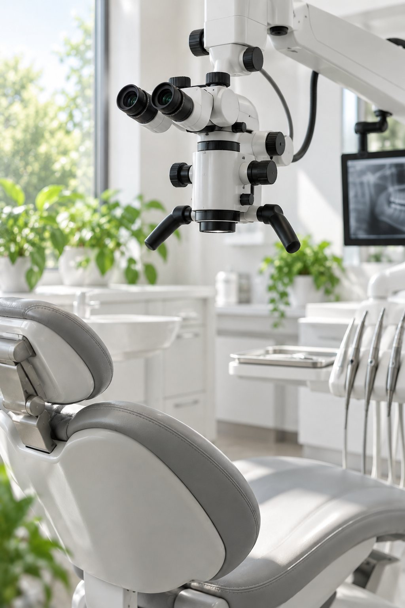
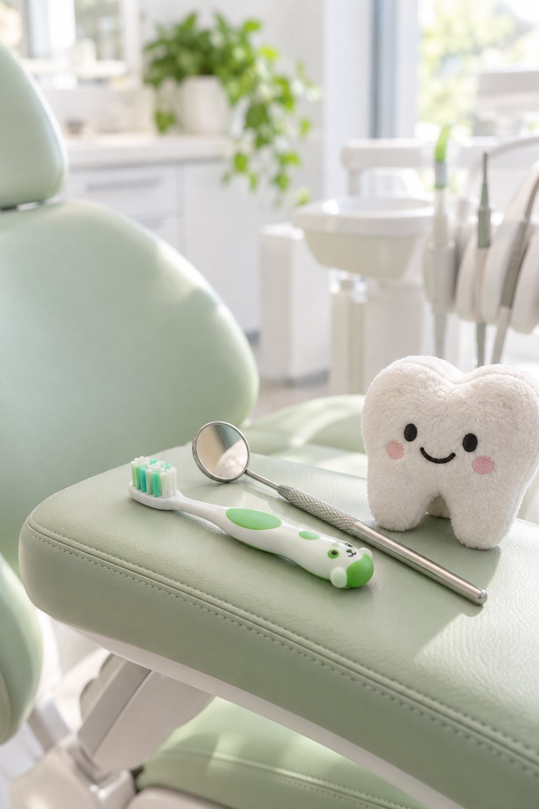

Бесплатная консультация с планом
Бесплатная консультация с планомБесплатная консультация с планом
Терапевт, хирург, ортопед или имплантолог осматривает и составляет план лечения с ценой. План можно забрать домой и подумать.

Проверим под микроскопом и на снимке, можно ли его сохранить. Если нельзя, хирург и ортопед вместе подберут имплант или протез и запишут цену в план. Консультация бесплатная.
Работаем каждый день с 9:00 до 21:00. Скажите администратору, что болит, и он подберёт ближайшее окно. Лечение кариеса от 4 000 ₽.
Лечение зубов
Под микроскопом с увеличением в 25–40 раз врач перелечит каналы и закроет перфорацию. Так зуб часто удаётся сохранить.
Лечение под микроскопомИмплант Osstem, Dentium или Straumann от 19 300 ₽. Сама установка занимает в среднем 10–30 минут.
Имплантация зубовAll-on-4: несъёмные зубы на всю челюсть на четырёх имплантах. Протез не выпадает и не закрывает нёбо.
All-on-4 и All-on-6Брекеты Damon и элайнеры. Первичная консультация ортодонта 1 700 ₽.
Брекеты и элайнерыДетский стоматолог Даниил Троицкий. Профосмотр со справкой 2 500 ₽.
Детская стоматологияAir-Flow по средам за 4 500 ₽ вместо 5 790 ₽.
Профгигиена Air-FlowУдалить зуб можно за несколько минут. Сохранить дольше и сложнее. Поэтому мы начинаем с вопроса «можно ли спасти», а не «что поставим взамен».
Если зуб не спасти, хирург и ортопед вместе смотрят снимок и предлагают несколько вариантов: от одного импланта до All-on-4. Цену каждого этапа вы видите до начала лечения.
Мы на Громова, 10/2 в Удельной. В соседнем здании, на Громова, 10, работает многопрофильная клиника «Умная Медицина»: там сдают анализы перед операцией и принимают терапевт, кардиолог и эндокринолог. К нам ездят из Жуковского, Раменского, Быкова, Ильинского, Красково и Малаховки.
Стоматология «Умная Медицина»
 Фото клиникиФото клиники
Фото клиникиФото клиники Фото клиники
Фото клиники Фото клиники
Фото клиники Фото клиники
Фото клиники Фото клиники
Фото клиники Фото клиники
Фото клиники
Шесть правил, по которым мы работаем с каждым пациентом.
Бесплатная консультация с планомТерапевт, хирург, ортопед или имплантолог осматривает и составляет план лечения с ценой. План можно забрать домой и подумать.
 Снимок здесь же
Снимок здесь жеПрицельный снимок, панораму и КТ делаем в клинике. Ехать за снимком в другое место не нужно.
Три мнения вместо одногоВ сложных случаях вас смотрят сразу три специалиста и предлагают несколько вариантов лечения.
 Цена в договоре
Цена в договореСтоимость из плана записываем в договор. Если по ходу лечения понадобится что-то ещё, сначала скажем и назовём цену, и только потом сделаем.
Гарантия на бумагеСроки гарантии на пломбы, коронки и протезы записаны в договоре. Если в этот срок что-то выпало, переделаем бесплатно. На имплант вы получаете паспорт.
Куратор на всё лечениеОдин человек ведёт вас от первого визита до последнего: записывает, напоминает, отвечает на вопросы. Оплата по этапам, документы для налогового вычета на руки.
Консультация с планом и ценой бесплатная. План можно забрать домой и подумать.
Записаться на консультацию
СохранитьЧаще всего зуб удаляют из-за плохо пролеченных каналов. Под микроскопом врач находит пропущенный канал, распломбирует старую пломбу, пролечит канал заново и закроет перфорацию. Вы при этом лежите, держать рот широко открытым не нужно. Если сохранить нельзя, врач скажет прямо и покажет причину на снимке.
ВосстановитьЕсли кости не хватает для импланта, хирург нарастит её синус-лифтингом или костными блоками. Установка импланта занимает в среднем 10–30 минут. Коронку ставят примерно через 2 месяца на нижней челюсти и через 4 на верхней. Анализы перед операцией сдаются в соседнем здании, в многопрофильной «Умной Медицине».
«в нескольких клиниках сказали, что кости мало и браться за меня не будут»из отзыва пациентаИмплантация
Для тех, у кого не осталось зубов на челюсти или кто устал от съёмного протеза. Четыре импланта, два из них под углом, держат несъёмный протез на всю челюсть. Он не выпадает, не закрывает нёбо, вкус еды остаётся. Привыкают обычно меньше чем за неделю.
 All-on-4
All-on-4
ДетямДетей принимает детский стоматолог Даниил Троицкий. Лечим молочные зубы, покрываем фтор-лаком, герметизируем фиссуры, проводим гигиену для детей до 6 лет. Для прикуса есть пластинки и аппараты Haas, Hyrax, Twin-block. Пока ребёнок у своего врача, вы можете попасть к своему.
«детей заболтают так, что все процедуры проходят без проблем и слез»отзыв в 2ГИС
После приёма ребёнок получает сертификат смелости.
Детская стоматологияСемь врачей. У каждого своя задача и свои отзывы на ПроДокторов.
Хирург, имплантолог
Сложные удаления, имплантация, костная пластика
Хирург, имплантолог
Удаление зубов, имплантация
Терапевт, эндодонтист, гигиенист
Каналы под микроскопом, перелечивание
Терапевт, ортодонт, гигиенист
Лечение зубов и исправление прикуса
Ортопед
Коронки, мосты, протезы на имплантах и All-on-4
Ортопед
Коронки, виниры, съёмные и несъёмные протезы
Детский стоматолог
Дети: лечение, удаление молочных зубов, профилактика
Цитаты из отзывов на ПроДокторов и в 2ГИС, без правок и без имён.
«Подписали договор, зафиксировали стоимость и начинаем лечение»
«снимок могут сделать на месте, не отправляя никуда»
«Был персональный куратор лечения, который помогал и решал все вопросы по лечению»
«Прием всегда вовремя начинается»
«я очень боялся имплантации, но врач настолько все хорошо объяснил, что страха не осталось»
Лечебные кабинеты, 3D-томограф Vatech, панорамный рентген и стерилизационная. Фото из карточек клиники в 2ГИС и Яндекс Картах.


Цены на 15.10.2026 из прайса клиники. Точную сумму врач запишет в план лечения, и она попадёт в договор.
Врач объяснит, что нужно сделать срочно, а что можно отложить. Решаете вы. План можно забрать домой и подумать.
Цена из плана записывается в договор. Если врач увидит то, чего не было видно на снимке, он сначала скажет и назовёт цену, и продолжит только с вашего согласия.
Сроки гарантии записаны в договоре. В этот срок переделаем бесплатно.
Да, через налоговый вычет. Документы для него выдаём в клинике.
Кость можно нарастить: закрытый синус-лифтинг от 22 000 ₽, пластика костными блоками от 55 000 ₽. Что подойдёт вам, хирург скажет по КТ.
Имплант ставят под местной анестезией, установка занимает в среднем 10–30 минут. Через 10 дней снимают швы.
В среднем через 2 месяца на нижней челюсти и через 4 на верхней.
Да, возьмите КТ или панораму на диске или файлом. Врач посмотрит их на консультации.
Если дёсны чувствительные, скажите гигиенисту: чистку можно сделать с анестезией.
Пациенты пишут: «Прием всегда вовремя начинается». Если врач задерживается, администратор предупредит заранее.
Да, у клиники большая парковка.
Громова, 10/2. Ежедневно с 9:00 до 21:00. У клиники парковка. По соседству, на Громова, 10, многопрофильная клиника «Умная Медицина». К нам ездят из Жуковского, Раменского, Быкова, Ильинского, Красково, Малаховки и Островцов.